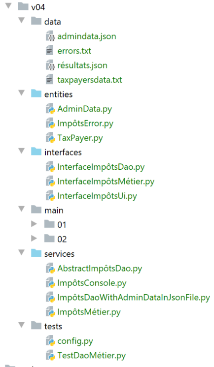

15. Exercício de aplicação - Versão 4

Aqui, retomamos o exercício descrito na secção |Versão 3| e implementamo-lo agora utilizando classes e interfaces. Iremos escrever duas aplicações:
A Aplicação 1 será a seguinte:

Um script principal [main] irá instanciar uma camada [DAO] e uma camada [business]:
- a camada [DAO] será responsável pela gestão dos dados armazenados em ficheiros de texto e, posteriormente, numa base de dados;
- a camada [business] será responsável pelo cálculo do imposto;
Nesta aplicação, não haverá entrada do utilizador: os dados do contribuinte serão encontrados num ficheiro de texto cujo nome será passado para o módulo [main].
Na Aplicação 2, o utilizador irá introduzir os dados do contribuinte através do teclado. A arquitetura evoluirá então da seguinte forma:

- A camada [DAO] (Data Access Object) gere o acesso a dados externos
- a camada [business] lida com a lógica de negócio, neste caso o cálculo de impostos. Ela não lida com os dados. Estes dados podem provir de duas fontes:
- a camada [DAO] para dados persistentes;
- a camada [UI] para dados fornecidos pelo utilizador.
- a camada [ui] (Interface do Utilizador) gere as interações com o utilizador;
- [main] atua como orquestrador;
A seguir, as camadas [dao], [business] e [ui] serão implementadas utilizando uma classe cada. As camadas [business] e [dao] serão as mesmas para ambas as aplicações. É por isso que foram combinadas numa única versão do exercício da aplicação.
15.1. Versão 4 – Aplicação 1
A Versão 4 calcula o imposto para uma lista de contribuintes armazenada num ficheiro de texto. Tem a seguinte arquitetura:

15.1.1. Entidades

As entidades são classes de dados. A sua função é encapsular dados e fornecer getters/setters que permitem verificar a validade dos dados. As entidades são trocadas entre camadas. Uma única entidade pode passar da camada [ui] para a camada [dao] e vice-versa.
15.1.1.1. A classe [ImpôtsError]
Iremos utilizar uma classe de exceção personalizada:
| # -------------------------------
# exceptional class
from MyException import MyException
class ImpôtsError(MyException):
pass
|
Assim que as camadas [business] e [DAO] encontrarem um problema, irão lançar esta exceção. Ela deriva da classe [MyException]. Por isso, é utilizada da seguinte forma: [raise ImpôtsError(error_code, error_message)].
15.1.1.2. A classe [AdminData]
A classe [AdminData] encapsula as constantes utilizadas nos cálculos fiscais:
| from BaseEntity import BaseEntity
# tax administration data
class AdminData(BaseEntity):
# keys excluded from class state
excluded_keys = []
# auroralized keys
@staticmethod
def get_allowed_keys() -> list:
return [
"limites",
"coeffr",
"coeffn",
"plafond_qf_demi_part",
"plafond_revenus_celibataire_pour_reduction",
"plafond_revenus_couple_pour_reduction",
"valeur_reduc_demi_part",
"plafond_decote_celibataire",
"plafond_decote_couple",
"plafond_impot_couple_pour_decote",
"plafond_impot_celibataire_pour_decote",
"abattement_dixpourcent_max",
"abattement_dixpourcent_min"
]
|
- Linha 5: A classe [AdminData] estende a classe [BaseEntity] descrita na secção |BaseEntity|. Recorde-se que as classes que estendem a classe [BaseEntity] devem definir:
- um atributo de classe [excluded_keys] (linha 7) que lista as propriedades do objeto excluídas quando o objeto é convertido num dicionário;
- um método estático [get_allowed_keys] (linhas 10–26) que devolve a lista de propriedades aceites quando o objeto é inicializado com um dicionário;
Não utilizámos setters para validar os dados utilizados para inicializar um objeto [AdminData]. Isto deve-se ao facto de este objeto ser único e definido por configuração, sendo, portanto, improvável que contenha erros.
15.1.1.3. A classe [TaxPayer]
A classe [TaxPayer] irá modelar um contribuinte:
| # imports
from BaseEntity import BaseEntity
from ImpôtsError import ImpôtsError
# a taxpayer
class TaxPayer(BaseEntity):
# models a taxpayer
# id: identifier
# married: yes / no
# children: number of children
# salary: annual salary
# tax: amount of tax payable
# surcôte: additional tax to pay
# discount: discount on tax payable
# reduction: reduction in tax payable
# rate: the taxpayer's tax rate
# keys excluded from class state
excluded_keys = []
# auroralized keys
@staticmethod
def get_allowed_keys() -> list:
return ['id', 'marié', 'enfants', 'salaire', 'impôt', 'surcôte', 'décôte', 'réduction', 'taux']
# properties
@property
def marié(self) -> str:
return self.__marié
@property
def enfants(self) -> int:
return self.__enfants
@property
def salaire(self) -> int:
return self.__salaire
@property
def impôt(self) -> int:
return self.__impôt
@property
def surcôte(self) -> int:
return self.__surcôte
@property
def décôte(self) -> int:
return self.__décôte
@property
def réduction(self) -> int:
return self.__réduction
@property
def taux(self) -> float:
return self.__taux
# setters
@marié.setter
def marié(self, marié: str):
ok = isinstance(marié, str)
if ok:
marié = marié.strip().lower()
ok = marié == "oui" or marié == "non"
if ok:
self.__marié = marié
else:
raise ImpôtsError(31, f"l'attribut marié [{marié}] doit avoir l'une des valeurs oui / non")
@enfants.setter
def enfants(self, enfants):
# children must be an integer >=0
try:
enfants = int(enfants)
erreur = enfants < 0
except:
erreur = True
if not erreur:
self.__enfants = enfants
else:
raise ImpôtsError(32, f"L'attribut enfants [{enfants}] doit être un entier >=0")
@salaire.setter
def salaire(self, salaire):
# salary must be an integer >=0
try:
salaire = int(salaire)
erreur = salaire < 0
except:
erreur = True
if not erreur:
self.__salaire = salaire
else:
raise ImpôtsError(33, f"L'attribut salaire [{salaire}] doit être un entier >=0")
@impôt.setter
def impôt(self, impôt):
# tax must be an integer >=0
try:
impôt = int(impôt)
erreur = impôt < 0
except:
erreur = True
if not erreur:
self.__impôt = impôt
else:
raise ImpôtsError(34, f"L'attribut impôt [{impôt}] doit être un nombre >=0")
@décôte.setter
def décôte(self, décôte):
# discount must be an integer >=0
try:
décôte = int(décôte)
erreur = décôte < 0
except:
erreur = True
if not erreur:
self.__décôte = décôte
else:
raise ImpôtsError(35, f"L'attribut décôte [{décôte}] doit être un nombre >=0")
@surcôte.setter
def surcôte(self, surcôte):
# surcharge must be an integer >=0
try:
surcôte = int(surcôte)
erreur = surcôte < 0
except:
erreur = True
if not erreur:
self.__surcôte = surcôte
else:
raise ImpôtsError(36, f"L'attribut surcôte [{surcôte}] doit être un nombre >=0")
@réduction.setter
def réduction(self, réduction):
# surcharge must be an integer >=0
try:
réduction = int(réduction)
erreur = réduction < 0
except:
erreur = True
if not erreur:
self.__réduction = réduction
else:
raise ImpôtsError(37, f"L'attribut réduction [{réduction}] doit être un nombre >=0")
@taux.setter
def taux(self, taux):
# rate must be real >=0
try:
taux = float(taux)
erreur = taux < 0
except:
erreur = True
if not erreur:
self.__taux = taux
else:
raise ImpôtsError(38, f"L'attribut taux [{taux}] doit être un nombre >=0")
|
Notas:
- A classe [TaxPayer] encapsula um contribuinte;
- linha 7: a classe [TaxPayer] deriva da classe [BaseEntity]. Por isso, possui um identificador [id];
- linha 20: nenhuma propriedade é excluída do estado de um objeto [AdminData];
- linhas 22–25: as propriedades da classe. Estas são explicadas nas linhas 9–17;
- linhas 27–58: getters para os atributos da classe;
- linhas 60–161: os setters para os atributos da classe. Recorde-se que a vantagem de uma classe encapsular dados em relação a um simples dicionário é que a classe pode verificar a validade das suas propriedades utilizando os seus setters;
15.1.2. A camada [dao]
Iremos agrupar as implementações da camada numa pasta [services]. Estas classes irão implementar interfaces definidas na pasta [interfaces].

15.1.2.1. A interface [InterfaceImpôtsDao]
A camada [dao] irá implementar a seguinte interface [InterfaceImpôtsDao] (ficheiro InterfaceImpôtsDao.py):
| # imports
from abc import ABC, abstractmethod
# interface IImpôtsDao
from AdminData import AdminData
class InterfaceImpôtsDao(ABC):
# list of tax brackets
@abstractmethod
def get_admindata(self) -> AdminData:
pass
# list of taxpayer data
@abstractmethod
def get_taxpayers_data(self) -> dict:
pass
# entering tax calculation results
@abstractmethod
def write_taxpayers_results(self, taxpayers_results: list):
pass
|
A interface define três métodos:
- [get_admindata]: é o método que recupera a tabela de escalões fiscais. Note-se que não são fornecidas informações sobre como obter estes dados. Mais adiante, estes serão encontrados primeiro num ficheiro de texto e, posteriormente, numa base de dados. Caberá às classes que implementam a interface adaptar-se ao método de armazenamento de dados. Teremos, portanto, uma classe para recuperar as faixas de imposto a partir de um ficheiro de texto e outra para as recuperar a partir de uma base de dados. Ambas implementarão o método [get_admindata];
- [get_taxpayers_data]: é o método que recupera os dados dos contribuintes. Mais uma vez, não especificamos onde serão encontrados. Trataremos apenas o caso em que se encontram num ficheiro de texto;
- [write_taxpayers_results]: é o método que irá persistir os resultados do cálculo de impostos. Não especificamos onde. Iremos apenas tratar do caso em que os resultados são persistidos num ficheiro de texto. O parâmetro [taxpayers_results] será a lista de resultados a serem persistidos;
15.1.2.2. A classe [AbstractImpôtsDao]
A camada [dao] será implementada por duas classes:
- uma irá recuperar os dados (contribuintes, resultados, escalões de imposto) de ficheiros de texto;
- a outra irá recuperar dados (contribuintes, resultados) de ficheiros de texto e escalões de imposto de uma base de dados;
As duas classes diferirão apenas na forma como lidam com as faixas de imposto. Os dados dos contribuintes e os resultados do cálculo do imposto serão geridos da mesma forma. Por este motivo, iremos geri-los numa classe pai [AbstractImpôtsDao]. O tratamento específico das faixas de imposto será gerido em duas classes filhas:
- a classe [ImpôtsDaoWithAdminDataInJsonFile] irá recuperar as faixas de imposto de um ficheiro de texto em formato JSON;
- a classe [ImpôtsDaoWithAdminDataInDatabase] irá recuperar as faixas de imposto de uma base de dados;
A classe pai [AbstractImpôtsDao] será a seguinte:
| # imports
import codecs
import json
from abc import abstractmethod
from AdminData import AdminData
from ImpôtsError import ImpôtsError
from InterfaceImpôtsDao import InterfaceImpôtsDao
from TaxPayer import TaxPayer
# base class for the [dao] layer
class AbstractImpôtsDao(InterfaceImpôtsDao):
# taxpayers and their taxes will be stored in text files
# manufacturer
def __init__(self, config: dict):
# config[taxpayersFilename]: name of the taxpayer text file
# config[resultsFilename]: the name of the jSON results file
# config[errorsFilename]: the name of the error file
# save parameters
self.taxpayers_filename = config.get("taxpayersFilename")
self.taxpayers_results_filename = config.get("resultsFilename")
self.errors_filename = config.get("errorsFilename")
# ------------------
# interface IImpôtsDao
# ------------------
# list of taxpayer data
def get_taxpayers_data(self) -> dict:
…
# tax entry for taxpayers
def write_taxpayers_results(self, taxpayers: list):
…
# reading tax brackets
@abstractmethod
def get_admindata(self) -> AdminData:
pass
|
- Linha 13: A classe [AbstractImpôtsDao] implementa a interface [InterfaceImpôtsDao]. Por conseguinte, contém os três métodos desta interface:
- [get_taxpayers_data]: linha 31;
- [write_taxpayers_results]: linha 35;
- [get_admindata]: linha 40. Este método não será implementado pela classe [AbstractImpôtsDao], pelo que é declarado como abstrato (linha 39);
- linha 16: o construtor recebe um dicionário [config] contendo as seguintes informações:
- [taxpayersFilename]: o nome do ficheiro de texto que contém os dados dos contribuintes;
- [resultsFilename]: o nome do ficheiro de texto no qual os resultados serão armazenados;
- [errorsFilename]: o nome do ficheiro de texto que lista os erros encontrados durante o processamento do ficheiro [taxpayersFilename];
O método [get_taxpayers_data] é o seguinte:
| # list of taxpayer data
def get_taxpayers_data(self) -> dict:
# initializations
taxpayers_data = []
datafile = None
erreurs = []
try:
# open data file
datafile = open(self.taxpayers_filename, "r")
# the current line of the
ligne = datafile.readline()
# line no
numligne = 0
while ligne != '':
# a + line
numligne += 1
# remove the whites
ligne = ligne.strip()
# ignore empty lines and comments
if ligne != "" and ligne[0] != "#":
try:
# we retrieve the 4 fields id,married,children,salary which form the taxpayer line
(id, marié, enfants, salaire) = ligne.split(",")
# create a new TaxPayer
taxpayers_data.append(
TaxPayer().fromdict({'id': id, 'marié': marié, 'enfants': enfants, 'salaire': salaire}))
except BaseException as erreur:
# we note the error
erreurs.append(f"Ligne {numligne}, {erreur}")
# a new taxpayer line reads
ligne = datafile.readline()
# record errors if any
if erreurs:
text = f"Analyse du fichier {self.taxpayers_filename}\n\n" + "\n".join(erreurs)
with codecs.open(self.errors_filename, "w", "utf-8") as fd:
fd.write(text)
# we return the result
return {"taxpayers": taxpayers_data, "erreurs": erreurs}
except BaseException as erreur:
# throw a ImpôtsError exception
raise ImpôtsError(11, f"{erreur}")
finally:
# close the file
if datafile:
datafile.close()
|
- linha 4: os dados do contribuinte (casado, filhos, salário) serão colocados numa lista de objetos do tipo [TaxPayer];
- linhas 8-9: abrimos o ficheiro de texto do contribuinte para leitura. O seu conteúdo tem o seguinte formato:
| # données valides : id, marié, enfants, salaire
1,oui,2,55555
2,oui,2,50000
3,oui,3,50000
4,non,2,100000
5,non,3,100000
6,oui,3,100000
7,oui,5,100000
8,non,0,100000
9,oui,2,30000
10,non,0,200000
11,oui,3,200000
# on peut avoir des lignes vides
# on crée des lignes erronées
# pas assez de valeurs
11,12
# trop de valeurs
12,oui,3,200000, x, y
# des valeurs erronées
x,x,x,x
|
Em comparação com versões anteriores:
- Cada linha no ficheiro [taxpayersFilename] começa com o número de identificação do contribuinte, um único número;
- são permitidos comentários e linhas vazias;
- vamos tratar os erros. Assim, as linhas 17, 19 e 21 devem ser marcadas como inválidas. Os erros são registados num ficheiro separado;
Vamos continuar a rever o código:
- linha 4: os dados do ficheiro de texto são transferidos para a lista [taxPayersData];
- linhas 14–31: o ficheiro de contribuintes é lido linha a linha;
- linha 14: chega-se ao fim do ficheiro quando é lida uma linha vazia (nada — nem mesmo o caractere de fim de linha \r\n);
- linha 20: as linhas vazias e os comentários são ignorados. Uma linha é considerada um comentário se, após remover os espaços em branco antes e depois do texto, o primeiro caractere for o caractere #;
- linha 24: uma linha válida consiste em quatro campos separados por vírgulas. Estes são recuperados. A atribuição de dados a uma tupla de quatro elementos falha se não houver exatamente quatro pontos de dados atribuídos;
- linha 25: se algum dos quatro campos recuperados [id, married, children, salary] for inválido, então o método [BaseEntity.fromdict] lançará uma exceção [MyException];
- linhas 25–26: um objeto [TaxPayer] é adicionado à lista de contribuintes [taxpayers_data];
- linhas 27–29: quaisquer erros são recolhidos numa lista [errors]. Esta lista foi criada na linha 6;
- linhas 33–36: a lista de erros encontrados é guardada no ficheiro de texto [errorsFilename]. Existem dois tipos de erros:
- uma linha não tinha o número correto de campos esperados;
- a informação na linha estava incorreta e não foi possível construir um objeto [TaxPayer];
- linhas 39–41: qualquer erro (BaseException) é capturado e propagado, envolvendo-o num tipo [TaxPayerError];
- linhas 42–45: em todos os casos, com sucesso ou não, o ficheiro de texto do contribuinte é fechado, caso tenha sido aberto;
O método [write_taxpayers_results] deve produzir um ficheiro JSON no seguinte formato:
[
{
"id": 1,
"marié": "oui",
"enfants": 2,
"salaire": 55555,
"impôt": 2814,
"surcôte": 0,
"taux": 0.14,
"décôte": 0,
"réduction": 0
},
{
"id": 2,
"marié": "oui",
"enfants": 2,
"salaire": 50000,
"impôt": 1384,
"surcôte": 0,
"taux": 0.14,
"décôte": 384,
"réduction": 347
},
{
"id": 3,
"marié": "oui",
"enfants": 3,
"salaire": 50000,
"impôt": 0,
"surcôte": 0,
"taux": 0.14,
"décôte": 720,
"réduction": 0
},
…
]
O método [write_taxpayers_results] é o seguinte:
| # tax entry for taxpayers
def write_taxpayers_results(self, taxpayers: list):
# writing results to a jSON file
# taxpayers: list of objects of type TaxPayer
# (id, married, children, salary, tax, surcharge, discount, reduction, rate)
# the [taxpayers] list is saved in text file [self.taxpayers_results_filename]
file = None
try:
# opening the results file
file = codecs.open(self.taxpayers_results_filename, "w", "utf8")
# creation of the list to be serialized in jSON
mapping = map(lambda taxpayer: taxpayer.asdict(), taxpayers)
# serialization jSON
json.dump(list(mapping), file, ensure_ascii=False)
except BaseException as erreur:
# restart the error with another type
raise ImpôtsError(12, f"{erreur}")
finally:
# close the file if it has been opened
if file:
file.close()
|
- linha 2: o método recebe uma lista de contribuintes [taxpayers] que deve guardar no ficheiro de texto [self.taxpayers_results_filename] em formato JSON;
- linha 10: criação do ficheiro de resultados em UTF-8;
- linha 12: aqui apresentamos a função [map], cuja sintaxe é [map (função, lista1)]. A [função] é aplicada a cada elemento de [lista1] e produz um novo elemento que preenche a lista [lista2]. Por fim, para cada i:
liste2[i]=fonction(liste1[i])
Aqui, [list1] é a lista [taxPayers], uma lista de objetos do tipo [TaxPayer]. A função [função] é aqui expressa como uma função chamada [lambda] que descreve a transformação aplicada a um elemento [contribuinte] da lista [contribuintes]: cada elemento [contribuinte] é substituído pelo seu dicionário [contribuinte.asdict()]. Por fim, a lista resultante [lista2] é a lista de dicionários dos elementos da lista [contribuintes];
- linha 12: o resultado devolvido pela função [map] não é a lista [list2], mas um objeto do tipo [map]. Para obter [list2], deve usar a expressão [list(mapping)] (linha 14);
- linha 14: a lista [list2] é guardada em formato JSON no ficheiro [self.taxpayers_results_filename];
- linhas 15–17: qualquer tipo de exceção é capturada e envolvida num [ImpôtsError] antes de ser re-lançada (linha 17);
- linhas 19–21: em todos os casos, seja com sucesso ou não, o ficheiro de resultados é fechado se tiver sido aberto;
15.1.2.3. Classe [ImpôtsDaoWithAdminDataInJsonFile]
A classe [ImpôtsDaoWithAdminDataInJsonFile] derivará da classe [AbstractImpôtsDao] e implementará o método [getAdminData] que a sua classe pai não implementou. Irá recuperar dados de administração fiscal a partir de um ficheiro JSON:
{
"limites": [9964, 27519, 73779, 156244, 0],
"coeffr": [0, 0.14, 0.3, 0.41, 0.45],
"coeffn": [0, 1394.96, 5798, 13913.69, 20163.45],
"plafond_qf_demi_part": 1551,
"plafond_revenus_celibataire_pour_reduction": 21037,
"plafond_revenus_couple_pour_reduction": 42074,
"valeur_reduc_demi_part": 3797,
"plafond_decote_celibataire": 1196,
"plafond_decote_couple": 1970,
"plafond_impot_couple_pour_decote": 2627,
"plafond_impot_celibataire_pour_decote": 1595,
"abattement_dixpourcent_max": 12502,
"abattement_dixpourcent_min": 437
}
A classe [ImpôtsDaoWithAdminDataInJsonFile] é a seguinte:
| # imports
import codecs
import json
from AbstractImpôtsDao import AbstractImpôtsDao
from AdminData import AdminData
from ImpôtsError import ImpôtsError
# an implementation of the [dao] layer, where tax administration data is stored in a jSON file
class ImpôtsDaoWithAdminDataInJsonFile(AbstractImpôtsDao):
# manufacturer
def __init__(self, config: dict):
# config[admindataFilename]: name of jSON file containing tax administration data
# config[taxpayersFilename]: name of the taxpayer text file
# config[resultsFilename]: the name of the jSON results file
# config[errorsFilename]: the name of the error file
# parent class initialization
AbstractImpôtsDao.__init__(self, config)
# reading tax administration data
file = None
try:
# open the jSON tax data file in read mode
file = codecs.open(config["admindataFilename"], "r", "utf8")
# transfer the contents of file jSON to object [AdminData]
self.admindata = AdminData().fromdict(json.load(file))
except BaseException as erreur:
# we relaunch the error as type [ImpôtsError]
raise ImpôtsError(21, f"{erreur}")
finally:
# close the file if it has been opened
if file:
file.close()
# -------------
# interface
# -------------
# data recovery from tax authorities
# the method returns an object [AdminData]
def get_admindata(self) -> AdminData:
return self.admindata
|
- Linha 11: A classe [ImpôtsDaoWithAdminDataInJsonFile] herda da classe [AbstractImpôtsDao]. Como tal, implementa a interface [InterfaceImpôtsDao];
- linha 13: o construtor recebe como parâmetro um dicionário contendo as informações das linhas 14–17;
- linha 20: a classe pai é inicializada;
- linha 24: o ficheiro JSON contendo os dados da administração fiscal é aberto;
- linha 25: o ficheiro UTF-8 contendo os dados da autoridade fiscal é aberto;
- linha 27: o conteúdo do ficheiro é lido e colocado no objeto [self.admindata] do tipo [AdminData]. As chaves no ficheiro JSON devem corresponder às propriedades aceites para um objeto [AdminData]; caso contrário, o método [fromdict] lançará uma exceção;
- linhas 28–30: tratamento de exceções. Quaisquer exceções que possam ocorrer são encapsuladas num tipo [ImpôtsError] antes de serem relançadas;
- linhas 32–34: o ficheiro é fechado, caso tenha sido aberto;
- linhas 42–43: implementação do método [get_admindata] da interface [InterfaceImpôtsDao];
15.1.3. A camada [business]
15.1.3.1. A interface [InterfaceImpôtsMétier]
A interface para a camada [de negócios] será a seguinte:
| # imports
from abc import ABC, abstractmethod
from AdminData import AdminData
from TaxPayer import TaxPayer
# interface IImpôtsMétier
class InterfaceImpôtsMétier(ABC):
# tax calculation for 1 taxpayer
@abstractmethod
def calculate_tax(self, taxpayer: TaxPayer, admindata: AdminData):
pass
|
- A interface [BusinessTaxInterface] define um único método:
- linha 12: o método [calculate_tax] calcula o imposto para um único contribuinte [taxpayer]. [admindata] é o objeto [AdminData] que encapsula os dados da administração fiscal;
- Linha 12: O método [calculate_tax] não devolve um resultado. Os dados obtidos (imposto, sobretaxa, desconto, redução, taxa) estão incluídos no parâmetro [taxpayer]: antes da chamada, estes atributos estão vazios; após a chamada, foram inicializados;
15.1.3.2. A classe [BusinessTaxes]
A classe [ImpôtsMétier] implementa a interface [InterfaceImpôtsMétier] da seguinte forma:

Os métodos da classe derivam do módulo [impôts_module_02] na secção |O módulo [impots.v02.modules.impôts_module_02]|. Limitámos os parâmetros do método a apenas dois:
- contribuinte(id, casado, filhos, salário, imposto, desconto, sobretaxa, redução, taxa): o objeto que representa um contribuinte e o seu imposto;
- admindata: o objeto que encapsula os dados da administração fiscal;
Demonstramos as alterações efetuadas utilizando um método;
| # tax calculation - phase 1
# ----------------------------------------
def calculate_tax(self, taxpayer: TaxPayer, admindata: AdminData):
# taxpayer(id, married, children, salary, tax, discount, surcharge, reduction, rate)
# admindata: tax administration data
# tax calculation with children
self.calculate_tax_2(taxpayer, admindata)
# results are in taxpayer
taux1 = taxpayer.taux
surcôte1 = taxpayer.surcôte
impot1 = taxpayer.impôt
# tax calculation without children
if taxpayer.enfants != 0:
# tax calculation for the same taxpayer without children
taxpayer2 = TaxPayer().fromdict(
{'id': 0, 'marié': taxpayer.marié, 'enfants': 0, 'salaire': taxpayer.salaire})
self.calculate_tax_2(taxpayer2, admindata)
# the results are in taxpayer2
taux2 = taxpayer2.taux
surcôte2 = taxpayer2.surcôte
impot2 = taxpayer2.impôt
# application of the family allowance ceiling
if taxpayer.enfants < 3:
# PLAFOND_QF_DEMI_PART euros for the first 2 children
impot2 = impot2 - taxpayer.enfants * admindata.plafond_qf_demi_part
else:
# PLAFOND_QF_DEMI_PART euros for the first 2 children, double for subsequent children
impot2 = impot2 - 2 * admindata.plafond_qf_demi_part - (taxpayer.enfants - 2) \
* 2 * admindata.plafond_qf_demi_part
else:
# if the taxpayer has no children, then impot2=impot1
impot2 = impot1
# we take the highest tax with the corresponding rate and surcharge
(impot, surcôte, taux) = (impot1, surcôte1, taux1) if impot1 >= impot2 else (
impot2, impot2 - impot1 + surcôte2, taux2)
# partial results
taxpayer.impôt = impot
taxpayer.surcôte = surcôte
taxpayer.taux = taux
# calculation of any discount
self.get_décôte(taxpayer, admindata)
taxpayer.impôt -= taxpayer.décôte
# calculation of any tax reduction
self.get_réduction(taxpayer, admindata)
taxpayer.impôt -= taxpayer.réduction
# result
taxpayer.impôt = math.floor(taxpayer.impôt)
|
- linha 3: O método [calculate_tax] é o único método na interface [InterfaceImpôtsMétier]. Recebe dois parâmetros:
- [tapPayer]: o contribuinte para quem o imposto está a ser calculado;
- [admindata]: o objeto que encapsula os dados da administração fiscal;
- os resultados do cálculo são encapsulados no parâmetro [taxpayer] (linhas 40–50). O conteúdo deste objeto não é, portanto, o mesmo antes e depois da chamada do método;
15.1.4. Testes para as camadas [dao] e [business]

- [TestDaoMétier] é a classe UnitTest para testar as camadas [dao] e [business];
- [config] é o ficheiro de configuração de teste;
A configuração [config] é a seguinte:
| def configure():
import os
# step 1 ------
# path python configuration
# folder of this file
script_dir = os.path.dirname(os.path.abspath(__file__))
# root_dir
root_dir = "C:/Data/st-2020/dev/python/cours-2020/python3-flask-2020/classes"
# absolute application dependencies
absolute_dependencies = [
f"{script_dir}/../entities",
f"{script_dir}/../interfaces",
f"{script_dir}/../services",
f"{root_dir}/02/entities",
]
# set the syspath
from myutils import set_syspath
set_syspath(absolute_dependencies)
# step 2 ------
# application configuration
config = {
# absolute paths for application files
"admindataFilename": f"{script_dir}/../data/input/admindata.json"
}
# instantiation of application layers
from ImpôtsDaoWithAdminDataInJsonFile import ImpôtsDaoWithAdminDataInJsonFile
from ImpôtsMétier import ImpôtsMétier
dao = ImpôtsDaoWithAdminDataInJsonFile(config)
métier = ImpôtsMétier()
# put the layer instances in the config
config["dao"] = dao
config["métier"] = métier
# return the config
return config
|
- linhas 4–23: Configuramos o caminho do Python para os testes;
- linhas 32–41: instanciar as camadas [dao] e [business]. Armazenar as suas referências no dicionário [config];
- linha 44: devolve este dicionário;
A classe de teste [TestDaoMétier] é a seguinte:
| import unittest
def get_config() -> dict:
# application configuration
import config
# we return the configuration
return config.configure()
class TestDaoMétier(unittest.TestCase):
# executed before each test_ method
def setUp(self) -> None:
# retrieve the test configuration
config = get_config()
# memorize some information
self.métier = config['métier']
self.admindata = config['dao'].get_admindata()
def test_1(self) -> None:
from TaxPayer import TaxPayer
# { 'married': 'yes', 'children': 2, 'salary': 55555,
# tax': 2814, 'surcôte': 0, 'décôte': 0, 'réduction': 0, 'taux': 0.14}
taxpayer = TaxPayer().fromdict({"marié": "oui", "enfants": 2, "salaire": 55555})
self.métier.calculate_tax(taxpayer, self.admindata)
# check
self.assertAlmostEqual(taxpayer.impôt, 2815, delta=1)
self.assertEqual(taxpayer.décôte, 0)
self.assertEqual(taxpayer.réduction, 0)
self.assertAlmostEqual(taxpayer.taux, 0.14, delta=0.01)
self.assertEqual(taxpayer.surcôte, 0)
def test_2(self) -> None:
from TaxPayer import TaxPayer
# { 'married': 'yes', 'children': 2, 'salary': 50000,
# tax': 1384, 'surcôte': 0, 'décôte': 384, 'réduction': 347, 'taux': 0.14}
taxpayer = TaxPayer().fromdict({'marié': 'oui', 'enfants': 2, 'salaire': 50000})
self.métier.calculate_tax(taxpayer, self.admindata)
# checks
self.assertAlmostEqual(taxpayer.impôt, 1384, delta=1)
self.assertAlmostEqual(taxpayer.décôte, 384, delta=1)
self.assertAlmostEqual(taxpayer.réduction, 347, delta=1)
self.assertAlmostEqual(taxpayer.taux, 0.14, delta=0.01)
self.assertEqual(taxpayer.surcôte, 0)
def test_3(self) -> None:
from TaxPayer import TaxPayer
# { 'married': 'yes', 'children': 3, 'salary': 50000,
# tax': 0, 'surcôte': 0, 'décôte': 720, 'réduction': 0, 'taux': 0.14}
taxpayer = TaxPayer().fromdict({'marié': 'oui', 'enfants': 3, 'salaire': 50000})
self.métier.calculate_tax(taxpayer, self.admindata)
# checks
self.assertEqual(taxpayer.impôt, 0)
self.assertAlmostEqual(taxpayer.décôte, 720, delta=1)
self.assertEqual(taxpayer.réduction, 0)
self.assertAlmostEqual(taxpayer.taux, 0.14, delta=0.01)
self.assertEqual(taxpayer.surcôte, 0)
def test_4(self) -> None:
from TaxPayer import TaxPayer
# { 'married': 'no', 'children': 2, 'salary': 100000,
# tax': 19884, 'surcôte': 4480, 'décôte': 0, 'réduction': 0, 'taux': 0.41}
taxpayer = TaxPayer().fromdict({'marié': 'non', 'enfants': 2, 'salaire': 100000})
self.métier.calculate_tax(taxpayer, self.admindata)
# checks
self.assertAlmostEqual(taxpayer.impôt, 19884, delta=1)
self.assertEqual(taxpayer.décôte, 0)
self.assertEqual(taxpayer.réduction, 0)
self.assertAlmostEqual(taxpayer.taux, 0.41, delta=0.01)
self.assertAlmostEqual(taxpayer.surcôte, 4480, delta=1)
def test_5(self) -> None:
from TaxPayer import TaxPayer
# { 'married': 'no', 'children': 3, 'salary': 100000,
# tax': 16782, 'surcôte': 7176, 'décôte': 0, 'réduction': 0, 'taux': 0.41}
taxpayer = TaxPayer().fromdict({'marié': 'non', 'enfants': 3, 'salaire': 100000})
self.métier.calculate_tax(taxpayer, self.admindata)
# checks
self.assertAlmostEqual(taxpayer.impôt, 16782, delta=1)
self.assertEqual(taxpayer.décôte, 0)
self.assertEqual(taxpayer.réduction, 0)
self.assertAlmostEqual(taxpayer.taux, 0.41, delta=0.01)
self.assertAlmostEqual(taxpayer.surcôte, 7176, delta=1)
def test_6(self) -> None:
from TaxPayer import TaxPayer
# { 'married': 'yes', 'children': 3, 'salary': 100000,
# tax': 9200, 'surcôte': 2180, 'décôte': 0, 'réduction': 0, 'taux': 0.3}
taxpayer = TaxPayer().fromdict({'marié': 'oui', 'enfants': 3, 'salaire': 100000})
self.métier.calculate_tax(taxpayer, self.admindata)
# checks
self.assertAlmostEqual(taxpayer.impôt, 9200, delta=1)
self.assertEqual(taxpayer.décôte, 0)
self.assertEqual(taxpayer.réduction, 0)
self.assertAlmostEqual(taxpayer.taux, 0.3, delta=0.01)
self.assertAlmostEqual(taxpayer.surcôte, 2180, delta=1)
def test_7(self) -> None:
from TaxPayer import TaxPayer
# { 'married': 'yes', 'children': 5, 'salary': 100000,
# tax': 4230, 'surcôte': 0, 'décôte': 0, 'réduction': 0, 'taux': 0.14}
taxpayer = TaxPayer().fromdict({'marié': 'oui', 'enfants': 5, 'salaire': 100000})
self.métier.calculate_tax(taxpayer, self.admindata)
# checks
self.assertAlmostEqual(taxpayer.impôt, 4230, delta=1)
self.assertEqual(taxpayer.décôte, 0)
self.assertEqual(taxpayer.réduction, 0)
self.assertAlmostEqual(taxpayer.taux, 0.14, delta=0.01)
self.assertEqual(taxpayer.surcôte, 0)
def test_8(self) -> None:
from TaxPayer import TaxPayer
# { 'married': 'no', 'children': 0, 'salary': 100000,
# tax': 22986, 'surcôte': 0, 'décôte': 0, 'réduction': 0, 'taux': 0.41}
taxpayer = TaxPayer().fromdict({'marié': 'non', 'enfants': 0, 'salaire': 100000})
self.métier.calculate_tax(taxpayer, self.admindata)
# checks
self.assertAlmostEqual(taxpayer.impôt, 22986, delta=1)
self.assertEqual(taxpayer.décôte, 0)
self.assertEqual(taxpayer.réduction, 0)
self.assertAlmostEqual(taxpayer.taux, 0.41, delta=0.01)
self.assertEqual(taxpayer.surcôte, 0)
def test_9(self) -> None:
from TaxPayer import TaxPayer
# { 'married': 'yes', 'children': 2, 'salary': 30000,
# tax': 0, 'surcôte': 0, 'décôte': 0, 'réduction': 0, 'taux': 0}
taxpayer = TaxPayer().fromdict({'marié': 'oui', 'enfants': 2, 'salaire': 30000})
self.métier.calculate_tax(taxpayer, self.admindata)
# checks
self.assertEqual(taxpayer.impôt, 0)
self.assertEqual(taxpayer.décôte, 0)
self.assertEqual(taxpayer.réduction, 0)
self.assertAlmostEqual(taxpayer.taux, 0.0, delta=0.01)
self.assertEqual(taxpayer.surcôte, 0)
def test_10(self) -> None:
from TaxPayer import TaxPayer
# { 'married': 'no', 'children': 0, 'salary': 200000,
# tax': 64210, 'surcôte': 7498, 'décôte': 0, 'réduction': 0, 'taux': 0.45}
taxpayer = TaxPayer().fromdict({'marié': 'non', 'enfants': 0, 'salaire': 200000})
self.métier.calculate_tax(taxpayer, self.admindata)
# checks
self.assertAlmostEqual(taxpayer.impôt, 64210, 1)
self.assertEqual(taxpayer.décôte, 0)
self.assertEqual(taxpayer.réduction, 0)
self.assertAlmostEqual(taxpayer.taux, 0.45, delta=0.01)
self.assertAlmostEqual(taxpayer.surcôte, 7498, delta=1)
def test_11(self) -> None:
from TaxPayer import TaxPayer
# { 'married': 'yes', 'children': 3, 'salary': 200000,
# tax': 42842, 'surcôte': 17283, 'décôte': 0, 'réduction': 0, 'taux': 0.41}
taxpayer = TaxPayer().fromdict({'marié': 'oui', 'enfants': 3, 'salaire': 200000})
self.métier.calculate_tax(taxpayer, self.admindata)
# checks
self.assertAlmostEqual(taxpayer.impôt, 42842, 1)
self.assertEqual(taxpayer.décôte, 0)
self.assertEqual(taxpayer.réduction, 0)
self.assertAlmostEqual(taxpayer.taux, 0.41, delta=0.01)
self.assertAlmostEqual(taxpayer.surcôte, 17283, delta=1)
if __name__ == '__main__':
unittest.main()
|
Comentários
- linha 11: a classe de teste estende a classe [unittest.TestCase];
- linhas 13–19: num UnitTest, o método [setUp] é executado antes de cada um dos métodos [test_];
- linha 16: a configuração do script [config] discutido anteriormente é recuperada;
- linha 18: é armazenada uma referência à camada [business];
- linha 19: solicitamos o objeto [AdminData] — que encapsula dados de administração fiscal — da camada [DAO] e armazenamo-lo;
- linhas 21–173: 11 testes cujos resultados foram verificados no site oficial de impostos de 2019 |https://www3.impots.gouv.fr/simulateur/calcul_impot/2019/simplifie/index.htm|;
- linhas 21–33: todos os testes foram criados utilizando o mesmo modelo;
- linha 22: importa a classe [TaxPayer];
- linha 24: contribuinte a ser testado;
- linha 25: resultados esperados;
- linha 26: criação do objeto [TaxPayer] do contribuinte;
- linha 27: cálculo do seu imposto. O resultado está em [taxpayer];
- linhas 29–33: verificação dos resultados obtidos;
- linha 29: verificamos o montante do imposto arredondado ao euro mais próximo. Os testes demonstraram, de facto, que os resultados obtidos pelo algoritmo neste documento podem diferir dos valores oficiais em até 1 euro;
A execução dos testes produz os seguintes resultados:

| Testing started at 16:08 ...
C:\Data\st-2020\dev\python\cours-2020\python3-flask-2020\venv\Scripts\python.exe "C:\Program Files\JetBrains\PyCharm Community Edition 2020.1.2\plugins\python-ce\helpers\pycharm\_jb_unittest_runner.py" --path C:/Data/st-2020/dev/python/cours-2020/python3-flask-2020/impots/v04/tests/TestDaoMétier.py
Launching unittests with arguments python -m unittest C:/Data/st-2020/dev/python/cours-2020/python3-flask-2020/impots/v04/tests/TestDaoMétier.py in C:\Data\st-2020\dev\python\cours-2020\python3-flask-2020\impots\v04\tests
Ran 11 tests in 0.055s
OK
Process finished with exit code 0
|
15.1.5. Script principal

O script principal é configurado pelo seguinte script [config]:
| def configure():
import os
# step 1 ------
# path python configuration
# folder of this file
script_dir = os.path.dirname(os.path.abspath(__file__))
# root_dir
root_dir = "C:/Data/st-2020/dev/python/cours-2020/python3-flask-2020/classes"
# application dependencies
absolute_dependencies = [
# local dependencies
f"{script_dir}/../../entities",
f"{script_dir}/../../interfaces",
f"{script_dir}/../../services",
f"{root_dir}/02/entities",
]
# set the syspath
from myutils import set_syspath
set_syspath(absolute_dependencies)
# step 2 ------
# application configuration
config = {
# absolute paths for application files
"taxpayersFilename": f"{script_dir}/../../data/input/taxpayersdata.txt",
"resultsFilename": f"{script_dir}/../../data/output/résultats.json",
"admindataFilename": f"{script_dir}/../../data/input/admindata.json",
"errorsFilename": f"{script_dir}/../../data/output/errors.txt"
}
# instantiation of application layers
from ImpôtsDaoWithAdminDataInJsonFile import ImpôtsDaoWithAdminDataInJsonFile
from ImpôtsMétier import ImpôtsMétier
dao = ImpôtsDaoWithAdminDataInJsonFile(config)
métier = ImpôtsMétier()
# put the layer instances in the config
config["dao"] = dao
config["métier"] = métier
# return the config
return config
|
É semelhante ao utilizado para testar as camadas [business] e [dao].
O script principal [main.py] é o seguinte:
| # configure the application
import config
config = config.configure()
# imports
from ImpôtsError import ImpôtsError
# retrieve application layers (already instantiated)
dao = config["dao"]
métier = config["métier"]
try:
# tax bracket recovery
admindata = dao.get_admindata()
# reading taxpayer data
taxpayers = dao.get_taxpayers_data()["taxpayers"]
# taxpayers?
if not taxpayers:
raise ImpôtsError(51, f"Pas de contribuables valides dans le fichier {config['taxpayersFilename']}")
# tax calculation
for taxpayer in taxpayers:
# taxpayer is both an input and output parameter
# taxpayer will be modified
métier.calculate_tax(taxpayer, admindata)
# writing results to a text file
dao.write_taxpayers_results(taxpayers)
except ImpôtsError as erreur:
# error display
print(f"L'erreur suivante s'est produite : {erreur}")
finally:
# completed
print("Travail terminé...")
|
Notas
- linhas 2–4: recuperamos a configuração da aplicação. Sabemos também que o Python Path da aplicação já foi criado;
- linhas 9–11: recuperamos referências às camadas [business] e [DAO];
- linha 15: recuperamos dados da administração fiscal;
- linha 17: recuperamos a lista de contribuintes para os quais os impostos devem ser calculados;
- linhas 19–20: se esta lista estiver vazia, é lançada uma exceção;
- linhas 22–25: calculamos o imposto para os vários objetos [taxpayer] utilizando a camada [business];
- linha 27: [contribuintes] é agora uma lista de objetos [TaxPayer] em que os atributos (imposto, desconto, sobretaxa, redução, taxa) receberam valores. Esta lista é gravada num ficheiro JSON;
- linhas 28–30: detetar quaisquer erros potenciais;
- linhas 31–33: executadas em todos os casos;
A execução do script produz os mesmos resultados que nas versões anteriores. O ficheiro de erros dos contribuintes foi uma nova funcionalidade nesta versão. Após a execução do script [main], o seu conteúdo é o seguinte:
Analyse du fichier C:\Data\st-2020\dev\python\cours-2020\python3-flask-2020\impots\v04\main\01/../../data/input/taxpayersdata.txt
Ligne 17, not enough values to unpack (expected 4, got 2)
Ligne 19, too many values to unpack (expected 4)
Ligne 21, MyException[1, L'identifiant d'une entité <class 'TaxPayer.TaxPayer'> doit être un entier >=0]
As linhas com erros eram as seguintes:
| # données valides : id, marié, enfants, salaire
1,oui,2,55555
2,oui,2,50000
3,oui,3,50000
4,non,2,100000
5,non,3,100000
6,oui,3,100000
7,oui,5,100000
8,non,0,100000
9,oui,2,30000
10,non,0,200000
11,oui,3,200000
# on peut avoir des lignes vides
# on crée des lignes erronées
# pas assez de valeurs
11,12
# trop de valeurs
12,oui,3,200000, x, y
# des valeurs erronées
x,x,x,x
|
15.2. Versão 4 – Aplicação 2
Nesta versão, o utilizador introduz a lista de contribuintes através do teclado. A arquitetura da aplicação será a seguinte:

Surge um novo módulo: a camada [ui] (Interface do Utilizador), que irá interagir com o utilizador. Esta camada terá uma interface e será implementada por uma classe.

15.2.1. A interface [InterfaceImpôtsUi]
| # imports
from abc import ABC, abstractmethod
# interface InterfaceImpôtsUI
class InterfaceImpôtsUi(ABC):
# execution of the class implementing the interface
@abstractmethod
def run(self):
pass
|
A interface [InterfaceImpôtsUi] terá apenas um método, o que se encontra nas linhas 8–10. A interface será implementada aqui com uma aplicação de consola, mas também poderia ser implementada com uma interface gráfica de utilizador. Os parâmetros passados ao método [run] não seriam os mesmos em ambas as implementações. Para contornar este problema, a abordagem habitual consiste em:
- não passar quaisquer parâmetros para o método [run] (ou passar o número mínimo de parâmetros);
- passar parâmetros para o construtor da classe que implementa a interface. Estes podem diferir de uma implementação para outra. Estes parâmetros são armazenados como atributos de classe;
- assegurar que o método [run] utiliza estes atributos de classe (self.x);
Este método permite uma interface muito geral, especificada pelos parâmetros dos construtores de cada classe de implementação. Este método já foi utilizado na versão modular n.º 1.
15.2.2. A classe [ImpôtsConsole]
A classe [ImpôtsConsole] implementa a interface [InterfaceImpôtsUi] da seguinte forma:
| # imports
import re
from InterfaceImpôtsUi import InterfaceImpôtsUi
from TaxPayer import TaxPayer
# layer [UI]
class ImpôtsConsole(InterfaceImpôtsUi):
# manufacturer
def __init__(self, config: dict):
# save parameters
self.admindata = config['dao'].get_admindata()
self.métier = config['métier']
def run(self):
# interactive dialogue with the user
fini = False
while not fini:
# is the taxpayer married?
marié = input("Le contribuable est-il marié / pacsé (oui/non) (* pour arrêter) : ").strip().lower()
# check validity of input
while marié != "oui" and marié != "non" and marié != "*":
# error msg
print("Tapez oui ou non ou *")
# question again
marié = input("Le contribuable est-il marié / pacsé (oui/non) (* pour arrêter) : ").strip().lower()
# finished?
if marié == "*":
# dialogue over
return
# number of children
enfants = input("Nombre d'enfants : ").strip()
# check validity of input
if not re.match(r"^\d+$", enfants):
# error msg
print("Tapez un nombre entier positif ou nul")
# here we go again
enfants = input("Nombre d'enfants : ").strip()
# annual salary
salaire = input("Salaire annuel : ").strip()
# check validity of input
if not re.match(r"^\d+$", salaire):
# error msg
print("Tapez un nombre entier positif ou nul")
# here we go again
salaire = input("Salaire annuel : ").strip()
# tAX CALCULATION
taxpayer = TaxPayer().fromdict({'id': 0, 'marié': marié, 'enfants': int(enfants), 'salaire': int(salaire)})
self.métier.calculate_tax(taxpayer, self.admindata)
# display
print(f"Impôt du contribuable = {taxpayer}\n\n")
# next taxpayer
|
- Linha 9: A classe [TaxConsole] implementa a interface [TaxUiInterface];
- linha 11: o construtor da classe recebe um parâmetro, o dicionário [config] que contém a configuração da aplicação;
- linha 13: são recuperados dados da autoridade fiscal para calcular o imposto;
- linha 14: é armazenada uma referência à camada [business];
- linha 16: implementação do método [run] da interface;
- linhas 19–53: interação do utilizador. Isto envolve
- solicitar ao contribuinte três informações (estado civil, filhos, salário);
- o cálculo do imposto;
- exibir o resultado;
- o diálogo termina quando o utilizador responde * à primeira pergunta;
- linhas 20–27: o programa pergunta se o contribuinte é casado e verifica a validade da resposta;
- linhas 29–31: se o utilizador respondeu «*» à pergunta, o diálogo termina;
- linhas 32–39: pergunta-se ao contribuinte quantos filhos tem e verifica-se a validade da resposta;
- linhas 40–47: é solicitado o salário anual do contribuinte e a validade da resposta é verificada;
- linhas 48–50: utilizando esta informação, a camada [de negócios] calcula o imposto do contribuinte;
- linha 52: o montante do imposto é apresentado;
15.2.3. O script principal
O script principal [main] é configurado pelo seguinte ficheiro [config]:
| def configure():
import os
# step 1 ------
# path python configuration
# folder of this file
script_dir = os.path.dirname(os.path.abspath(__file__))
# root_dir
root_dir = "C:/Data/st-2020/dev/python/cours-2020/python3-flask-2020/classes"
# application dependencies
absolute_dependencies = [
# local dependencies
f"{script_dir}/../../entities",
f"{script_dir}/../../interfaces",
f"{script_dir}/../../services",
f"{root_dir}/02/entities",
]
# set the syspath
from myutils import set_syspath
set_syspath(absolute_dependencies)
# step 2 ------
# application configuration
config = {
# absolute paths for application files
"admindataFilename": f"{script_dir}/../../data/input/admindata.json",
}
# instantiation of application layers
from ImpôtsDaoWithAdminDataInJsonFile import ImpôtsDaoWithAdminDataInJsonFile
from ImpôtsMétier import ImpôtsMétier
from ImpôtsConsole import ImpôtsConsole
# dao layer
dao = ImpôtsDaoWithAdminDataInJsonFile(config)
# business layer
métier = ImpôtsMétier()
# put the layer instances in the config
config["dao"] = dao
config["métier"] = métier
# layer ui
ui = ImpôtsConsole(config)
config["ui"] = ui
# return the config
return config
|
O script principal é o seguinte (main.py):
| # configure the application
import config
config = config.configure()
# imports
from ImpôtsError import ImpôtsError
# retrieve application layers (already instantiated)
ui = config["ui"]
# code
try:
# execution of the [ui] layer
ui.run()
except ImpôtsError as erreur:
# the error message is displayed
print(f"L'erreur suivante s'est produite : {erreur}")
finally:
# executed in all cases
print("Travail terminé...")
|
- linhas 1-4: recuperam a configuração da aplicação;
- linha 10: recupera uma referência à camada [ui];
- linhas 12-21: a estrutura do código é a mesma da aplicação anterior: código envolvido num bloco try/catch para capturar quaisquer exceções potenciais;
- linha 15: solicitamos à camada [ui] que execute: a interação do utilizador começa então;
- linhas 16–18: capturam quaisquer exceções potenciais;
Eis um exemplo de execução:
C:\Data\st-2020\dev\python\cours-2020\python3-flask-2020\venv\Scripts\python.exe C:/Data/st-2020/dev/python/cours-2020/python3-flask-2020/impots/v04/main/02/main.py
Le contribuable est-il marié / pacsé (oui/non) (* pour arrêter) : oui
Nombre d'enfants : 3
Salaire annuel : 200000
Impôt du contribuable = {"id": 0, "marié": "oui", "enfants": 3, "salaire": 200000, "impôt": 42842, "surcôte": 17283, "taux": 0.41, "décôte": 0, "réduction": 0}
Le contribuable est-il marié / pacsé (oui/non) (* pour arrêter) : *
Travail terminé...
Process finished with exit code 0